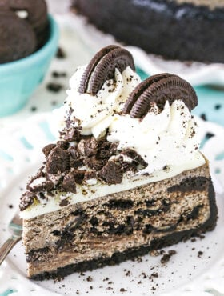

Oreo Cheesecake

Description
This Oreo Cheesecake is thick, creamy, and filled with cookies and cream! It's baked in an Oreo crust and topped with white chocolate ganache and homemade whipped cream. With the amount of Oreo baked into it, it is the BEST Oreo Cheesecake you will ever have.
I'm a big fan of Oreo Cheesecake and this recipe just might be my new favorite. I hope you will love it too!
Ingredients
Crust
- 35 Oreos (3 cups - 403g Oreo crumbs)
- 5 tbsp (70g) butter, melted (salted or unsalted is fine)
Filling
- 24 ounces (678g) cream cheese, room temperature
- 1 cup (207g) sugar
- 3 tbsp (24g) all purpose flour
- 1 cup (230g) sour cream
- 1 1/2 tbsp vanilla extract
- 4 large eggs, room temperature
- 1 cup (134g) Oreo crumbs (from about 11–12 Oreos)
- 20 Oreos, cut into quarters
White Chocolate Ganache
- 7 oz white chocolate chips
- 4 tbsp (60ml) heavy whipping cream
- Chopped Oreos
Whipped Cream
- 1 cup (240ml) heavy whipping cream, cold
- 1/2 cup (58g) powdered sugar
- 3/4 tsp vanilla extract
- Oreos, cut in half
Instructions
Crust
- Preheat oven to 325°F (163°C). Line a 9-inch (23cm) springform pan with parchment paper in the bottom and grease the sides.
- Combine the crust ingredients in a small bowl. Press the mixture into the bottom and up the sides of the springform pan.
- Bake the crust for 8-10 minutes, then set aside to cool.
- Cover the outsides of the pan with aluminum foil so that water from the water bath cannot get in. Set prepared pan aside.
Filling
- Reduce oven temperature to 300°F (148°C).
- In a large bowl, beat the cream cheese, sugar and flour on low speed until well completely combined and smooth. Be sure to use low speed to reduce the amount of air added to the batter, which can cause cracks. Scrape down the sides of the bowl.
- Add the sour cream and vanilla extract and mix on low speed until well combined.
- Add the eggs one at a time, mixing slowly to combine after each addition. Scrape down the sides of the bowl as needed to make sure everything is well combined. Gently stir the Oreo crumbs into the filling.
- Pour a third of the cheesecake filling into the crust and spread evenly. Top it with half of the quartered Oreos.
- Add another third of the cheesecake filling and spread evenly, then the other half of the Oreos.
- Top the cheesecake with the remaining filling and spread into an even layer. It should be a thick enough layer to keep the Oreos from floating to the top. Try not to jostle the cheesecake around too much, or the Oreos will come to the surface. You want to avoid that so that you don’t end up with cracks in the top of your cheesecake. If some Oreos or air bubbles surface, use a toothpick to push down the Oreos and pop the bubbles.
- Place the springform pan inside another larger pan. Fill the outside pan with enough warm water to go about halfway up the sides of the springform pan. The water should not go above the top edge of the aluminum foil on the springform pan.
- Bake for 1 hour 20 minutes. The center should be set, but still jiggly.
- Turn off the oven and leave the door closed for 30 minutes. The cheesecake will continue to cook, but slowly begin to cool as well.
- Crack the door of the oven for 30 minutes to allow the cheesecake to continue to cool slowly. This process helps prevent cracking.
- Remove the cheesecake from the oven and water bath wrapping and refrigerate until firm, 5-6 hours or overnight.
- Remove the cheesecake from the springform pan and place on a serving dish.
- To make the ganache, place the white chocolate chips in a medium heat proof bowl.
- Heat the heavy cream just until it begins to boil.
- Pour the hot cream over the white chocolate chips and allow to sit for 2-3 minutes, then whisk until smooth. If not completely melted and smooth, heat in 10 second increments, stirring between each until fully melted.
- Allow the ganache to cool a bit (about 5 minutes, until thickened but still pourable and spreadable), then pour the ganache onto the top of the cheesecake and spread evenly.
- To make the whipped cream, add the heavy whipping cream and powdered sugar to a large mixer bowl. Whip on high speed until stiff peaks form.
- Pipe the whipped cream onto the top outer edge of the cheesecake.
- Finish the cheesecake off by adding additional chopped Oreos to the center of the cheesecake and an Oreo half to piped whipped cream swirls.
- Refrigerate until ready to serve. Cheesecake is best for 4-5 days.